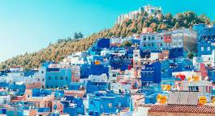

Coast of Morocco
For family vacations and personal traveling
Tangier
Tangier is a beautiful city of the coast of Morocco,located in west africa joining up the Mediterranean sea and Atlantic ocean.Tangir known for it's natural sand beaches and white Infastructure.Tangier has been given the nickname of he white city because of the heavily influneced during a time of developmentening in very pale / white local areas. BOOK YOUR FLIGHT TODAY!!
food
Food in Tangier is a beautiful, salty collision of Mediterranean freshness, Spanish street style, and traditional Moroccan spice. Because the city sits on two seas, seafood is the star, featuring everything from grilled sardines to zesty fish tagines with preserved lemons and olives. You’ll find a unique Spanish influence in local favorites like Kalinti (a warm, custardy chickpea tart) and Bocadillos (heaped, customisable sandwiches), while breakfast usually stars Jben, a creamy local goat cheese served with honey and mint tea. From the legendary terraces of Café Hafa to the bustling stalls of the Medina, the food scene is defined by its vibrant "crossroads" identity—simple, fresh, and deeply influenced by its coastal heritage.
Culture


The culture of Tangier is a rich mix of African, Arab, and European influences due to its location between the Mediterranean Sea and the Atlantic Ocean. The city has been shaped by Berber roots, Arab-Islamic traditions, and periods of Spanish and French presence, which created a diverse and cosmopolitan culture. People mainly speak Arabic and French, and Spanish is also common because Tangier is very close to Spain. Daily life often centres around busy markets, cafés, and family gatherings. Traditional Moroccan food, mint tea, music, and storytelling are important parts of social life. The city is also famous for its art and literature scene and has attracted many writers and artists over the years. Because it is located near the Strait of Gibraltar and close to Europe, Tangier has long been a meeting place for different cultures, making its atmosphere lively, open, and internationally influenced.